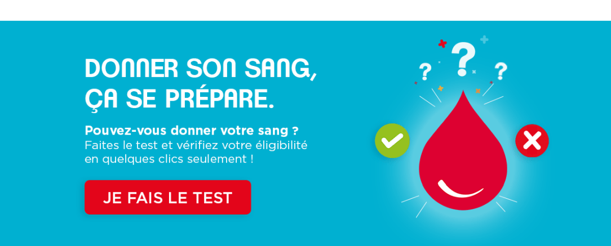

Suis-je éligible au don de sang ?
Prêt pour sauver des vies ? Pour cela 3 étapes seulement : 1 Je m’auto évalue en 5 minutes, grâce au questionnaire Puis-je donner*; 2 Je choisis mon lieu de collecte sur la carte Où donner ; 3 Je prends rendez-vous. Un donneur averti en vaut deux ;-). C'est parti !